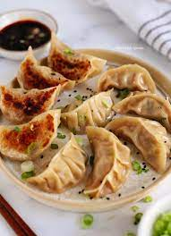

Dumplings

These Ukrainian halfmoon-shaped stuffed dumplings can be sweet or savory, served boiled or fried, garnished with fried onions and served with sour cream, or served plain.
Ingridients
- Dough
- water
- all-purpose flour
- salt
- an egg or a table soon of oil
- Filling
- mashed potatoes
- fried onion
Steps
- Combine the egg with water and salt, and whisk to break it up.
- Gradually incorporate the flour and knead the resulting dough until it no longer sticks to your hands
- Mix the filling
- roll the dough into big sheets and punch out the circles with an upturned glass or biscuit cutter.
- Cook in boiling water until varenyky start to float